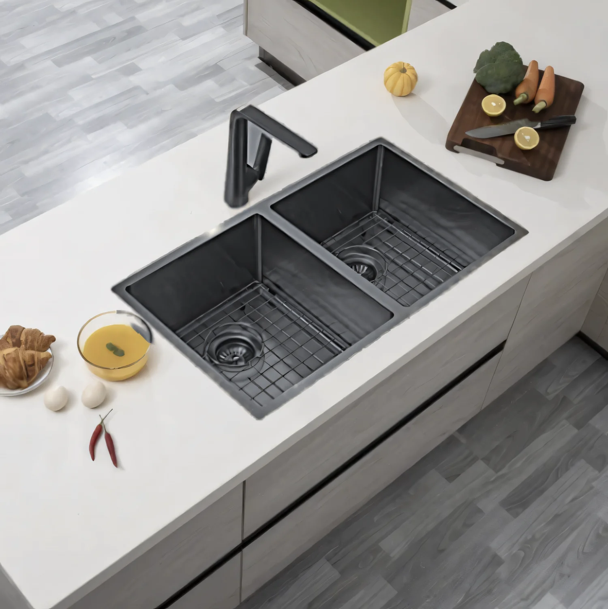

Kitchens
Multistock stocks a complete range of kitchen sinks — from sleek undermount and topmount stainless steel through to durable granite composite bowls. Browse the styles below, or get in touch with our team for expert advice on the right sink for your space.
Our kitchen sinks are built to last, with sound-dampened, scratch- and stain-resistant finishes in a range of sizes and configurations to match any kitchen.
Please feel free to visit our Somerville showroom to view these sinks in person.
Kitchen Sinks
Our Range
Click any photo to open it full size. Use the arrow keys to move through the range.